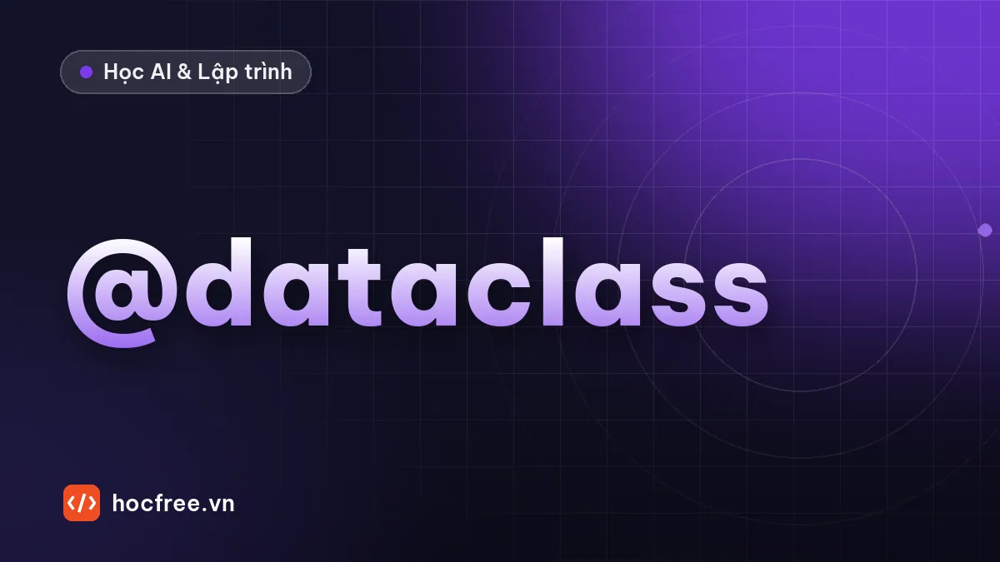

dataclass, Enum và NamedTuple: lớp dữ liệu gọn trong Python
Khai báo lớp dữ liệu bằng @dataclass với field, frozen, order, __post_init__, slots; dùng Enum thay hằng chuỗi và NamedTuple.

Học xong bài này, bạn sẽ
- Khai báo lớp dữ liệu gọn bằng @dataclass
- Dùng field, frozen, order, __post_init__
- Thay hằng số chuỗi bằng Enum
Nên học trước: Kế thừa, composition và lớp trừu tượng
Nội dung bài viết
Rất nhiều class trong thực tế chủ yếu để chứa dữ liệu: sản phẩm, đơn hàng, tọa độ, cấu hình. Viết tay __init__, __repr__, __eq__ cho từng class vừa dài vừa dễ sót. @dataclass sinh tự động những phương thức đó từ khai báo trường. Còn Enum thay thế những hằng chuỗi kiểu "dang_giao" dễ gõ sai bằng một tập giá trị cố định, an toàn.
1. dataclass cơ bản
from dataclasses import dataclass
@dataclass
class SanPham:
ten: str
gia: int
so_luong: int = 0 # có giá trị mặc định thì đứng sau
sp = SanPham("Bàn phím", 850_000, 3)
print(sp) # __repr__ tự sinh
print(sp == SanPham("Bàn phím", 850_000, 3)) # __eq__ so sánh từng trường
sp.so_luong -= 1
print(sp.so_luong, SanPham("Chuột", 250_000))SanPham(ten='Bàn phím', gia=850000, so_luong=3)
True
2 SanPham(ten='Chuột', gia=250000, so_luong=0)Chỉ cần khai báo tên trường kèm type hint, @dataclass tự viết __init__(self, ten, gia, so_luong=0), __repr__ và __eq__. Type hint ở đây là bắt buộc về cú pháp (để dataclass nhận ra trường), nhưng Python vẫn không kiểm tra kiểu khi chạy.
2. field: mặc định là list, trường không đưa vào __init__
from dataclasses import dataclass, field
from datetime import date
@dataclass
class DonHang:
ma: str
khach: str
mat_hang: list[tuple[str, int]] = field(default_factory=list) # mỗi đơn một list mới
ngay_tao: date = field(default_factory=date.today)
ghi_chu_noi_bo: str = field(default="", repr=False) # không hiện khi in
def tong_tien(self) -> int:
return sum(gia for _, gia in self.mat_hang)
d1 = DonHang("DH1", "An", ngay_tao=date(2026, 10, 29))
d2 = DonHang("DH2", "Bình", ngay_tao=date(2026, 10, 29))
d1.mat_hang.append(("Sách", 120_000))
print(d1)
print(d2.mat_hang, d1.tong_tien())DonHang(ma='DH1', khach='An', mat_hang=[('Sách', 120000)], ngay_tao=datetime.date(2026, 10, 29))
[] 120000Viết mat_hang: list = [] trong dataclass sẽ bị báo lỗi ValueError: mutable default ... is not allowed: dataclass chủ động chặn bẫy list dùng chung mà bạn đã gặp hai lần. default_factory nhận một hàm, gọi lại mỗi lần tạo đối tượng.
3. __post_init__: kiểm tra dữ liệu
from dataclasses import dataclass
@dataclass
class KhoangThoiGian:
bat_dau: int # phút trong ngày, 0–1439
ket_thuc: int
def __post_init__(self):
if not (0 <= self.bat_dau < self.ket_thuc <= 1440):
raise ValueError(f"Khoảng không hợp lệ: {self.bat_dau}–{self.ket_thuc}")
@property
def so_phut(self) -> int:
return self.ket_thuc - self.bat_dau
ca_sang = KhoangThoiGian(8 * 60, 12 * 60)
print(ca_sang.so_phut)
try:
KhoangThoiGian(600, 540)
except ValueError as loi:
print(loi)240
Khoảng không hợp lệ: 600–540__post_init__ chạy ngay sau __init__ tự sinh: chỗ để kiểm tra ràng buộc hoặc tính trường dẫn xuất. dataclass vẫn là class bình thường, thêm phương thức hay @property tùy ý.
4. frozen, order, slots
from dataclasses import dataclass, replace
@dataclass(frozen=True, order=True, slots=True)
class PhienBan:
lon: int
nho: int
va: int = 0
def __str__(self):
return f"{self.lon}.{self.nho}.{self.va}"
ds = [PhienBan(3, 14), PhienBan(3, 9, 2), PhienBan(3, 15)]
print([str(v) for v in sorted(ds)], max(ds))
v = PhienBan(3, 14)
try:
v.nho = 15
except AttributeError as loi:
print("Không sửa được:", type(loi).__name__)
print(replace(v, nho=15), {v: "ổn định"}[PhienBan(3, 14)])['3.9.2', '3.14.0', '3.15.0'] 3.15.0
Không sửa được: FrozenInstanceError
3.15.0 ổn địnhfrozen=True: không sửa được sau khi tạo, và tự có__hash__nên làm khóa dict, phần tử set được. Muốn "sửa", tạo bản mới bằngdataclasses.replace.order=True: sinh<,<=,>,>=, so sánh như tuple theo thứ tự khai báo trường. Đó là lý do 3.9.2 < 3.14.0 đúng như phiên bản Python thật, trong khi so sánh chuỗi "3.9" > "3.14".slots=True(Python 3.10+): tiết kiệm bộ nhớ và chặn gõ nhầm tên thuộc tính mới.
5. Enum: tập giá trị cố định
from enum import Enum
class TrangThai(Enum):
MOI = "moi"
DANG_GIAO = "dang_giao"
DA_GIAO = "da_giao"
DA_HUY = "da_huy"
t = TrangThai.DANG_GIAO
print(t, t.name, t.value)
print(TrangThai("da_giao")) # từ giá trị (ví dụ đọc từ JSON, CSDL)
print(t is TrangThai.DANG_GIAO, [s.name for s in TrangThai])
try:
TrangThai("dang giao") # gõ sai bị phát hiện ngay
except ValueError as loi:
print(loi)TrangThai.DANG_GIAO DANG_GIAO dang_giao
TrangThai.DA_GIAO
True ['MOI', 'DANG_GIAO', 'DA_GIAO', 'DA_HUY']
'dang giao' is not a valid TrangThaiSo với chuỗi tự do: gõ sai TrangThai.DANG_GAIO báo lỗi ngay (VS Code còn gạch đỏ trước khi chạy), danh sách trạng thái hợp lệ nằm ở một chỗ, và duyệt được bằng for. Khi cần lưu ra JSON, CSDL thì lưu .value; đọc vào thì gọi TrangThai(gia_tri). Nếu muốn enum dùng trực tiếp như chuỗi (ví dụ so sánh với "moi"), kế thừa StrEnum (Python 3.11+).
6. NamedTuple: tuple có tên trường
from typing import NamedTuple
class ToaDo(NamedTuple):
vi_do: float
kinh_do: float
hn = ToaDo(21.0285, 105.8542)
vi_do, kinh_do = hn # vẫn mở gói được như tuple
print(hn.vi_do, hn[1], hn)21.0285 105.8542 ToaDo(vi_do=21.0285, kinh_do=105.8542)NamedTuple bất biến, nhẹ, dùng được ở mọi chỗ cần tuple: hợp cho giá trị trả về của hàm. Cần thêm phương thức, kiểm tra, hay trường thay đổi được thì chọn dataclass.
Tóm tắt
@dataclasssinh__init__,__repr__,__eq__từ khai báo trường.field(default_factory=list)cho mặc định là list;__post_init__để kiểm tra.frozen=Truebất biến và hash được;order=Trueso sánh như tuple;replace()tạo bản sửa đổi.Enumthay hằng chuỗi; lưu.value, đọc bằngTenEnum(gia_tri).
Bài tập
Bài 1. Sản phẩm sắp xếp được
Viết dataclass SanPham(ten, gia, so_luong=0): __post_init__ từ chối giá âm; sắp xếp danh sách sản phẩm theo giá tăng dần (cùng giá thì theo tên).
Xem đáp án
from dataclasses import dataclass, field
@dataclass(order=True)
class SanPham:
gia: int # trường đầu tiên quyết định thứ tự
ten: str
so_luong: int = field(default=0, compare=False)
def __post_init__(self):
if self.gia < 0:
raise ValueError(f"{self.ten}: giá âm")
kho = [SanPham(250_000, "Chuột"), SanPham(90_000, "Lót chuột", 5), SanPham(250_000, "Bàn di")]
for sp in sorted(kho):
print(f"{sp.ten:<10}{sp.gia:>9,}")Lót chuột 90,000
Bàn di 250,000
Chuột 250,000order=True so sánh theo thứ tự khai báo, nên đặt gia trước ten; compare=False loại so_luong khỏi phép so sánh. Cách khác không đổi thứ tự trường: sorted(kho, key=lambda s: (s.gia, s.ten)).
Bài 2. Chuyển trạng thái đơn hàng hợp lệ
Dùng Enum TrangThai ở mục 5. Viết hàm chuyen(hien_tai, moi) chỉ cho phép: MỚI → ĐANG GIAO hoặc ĐÃ HỦY; ĐANG GIAO → ĐÃ GIAO; còn lại raise ValueError.
Xem đáp án
from enum import Enum
class TrangThai(Enum):
MOI = "moi"
DANG_GIAO = "dang_giao"
DA_GIAO = "da_giao"
DA_HUY = "da_huy"
HOP_LE = {
TrangThai.MOI: {TrangThai.DANG_GIAO, TrangThai.DA_HUY},
TrangThai.DANG_GIAO: {TrangThai.DA_GIAO},
}
def chuyen(hien_tai: TrangThai, moi: TrangThai) -> TrangThai:
if moi not in HOP_LE.get(hien_tai, set()):
raise ValueError(f"Không thể chuyển {hien_tai.name} → {moi.name}")
return moi
t = chuyen(TrangThai.MOI, TrangThai.DANG_GIAO)
t = chuyen(t, TrangThai.DA_GIAO)
print(t)
try:
chuyen(t, TrangThai.DA_HUY)
except ValueError as loi:
print(loi)TrangThai.DA_GIAO
Không thể chuyển DA_GIAO → DA_HUYLuật chuyển trạng thái là một dict dữ liệu, không phải chuỗi if lồng nhau: muốn thêm trạng thái "Đổi trả" chỉ cần thêm một dòng vào HOP_LE. Mô hình này gọi là máy trạng thái (state machine).
Nguồn tham khảo: dataclasses; enum; typing.NamedTuple.
Bài tập thực hành
- Viết dataclass SanPham(ten, gia, so_luong) có kiểm tra giá âm trong __post_init__ và sắp xếp theo giá.
- Viết Enum TrangThaiDon và hàm chuyển trạng thái chỉ cho phép đi theo thứ tự hợp lệ.
Làm xong bài tập mới chuyển sang bài tiếp theo: tự viết code là cách duy nhất để nhớ lâu.